See what a workflow produces.
Actual first-party runs with the input brief, selected models and review notes. Open a sample graph to reuse it. Viewing these saved outputs is free; generating your own uses your NanoGPT balance.
Image and text samples were inspected; video notes describe sampled frames. Audio review is labeled separately. These examples show observed results, including limitations, rather than guaranteeing the next generation.
Like what you see? Steal a noodle — open the graph, change a line, hit run.
midnight drop notice gg writers
{kind=link}
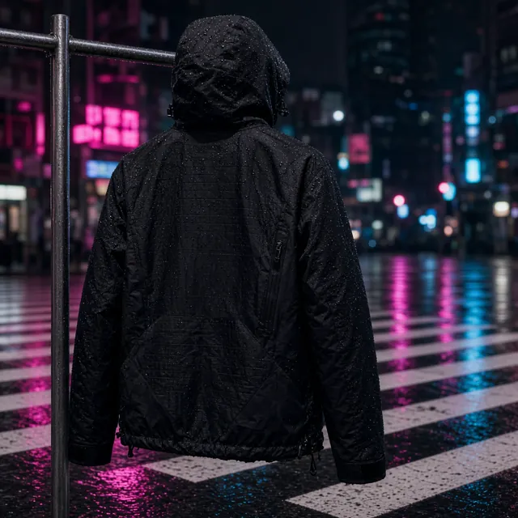
Drop begins 8 September at 00:01 JST. Claim one of 120 black nylon night-raid jackets for $280. One per customer, no restock. Pickup Friday and Saturday. 10 am to 8 pm. Shibuya studio. Bring QR from confirmation email. Cancel by emailing drop@example.com at least 24 hours before pickup.
Detector proof
gg writers.
20.9% → 0% AI · ZeroGPT
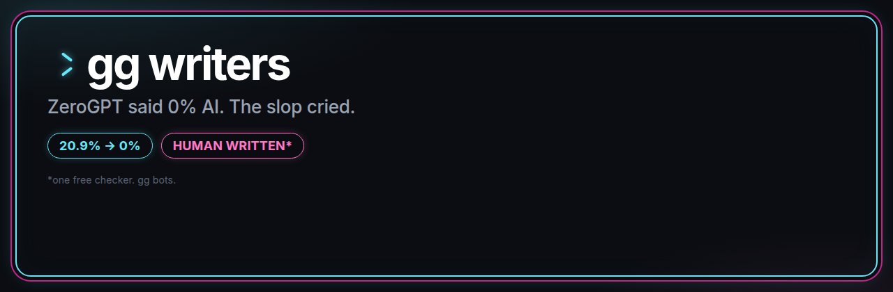
{kind=link}
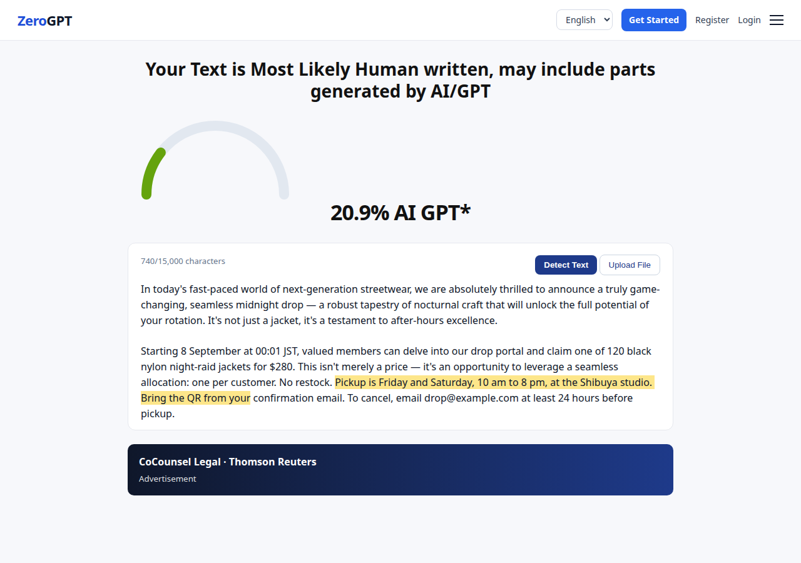
{kind=link}
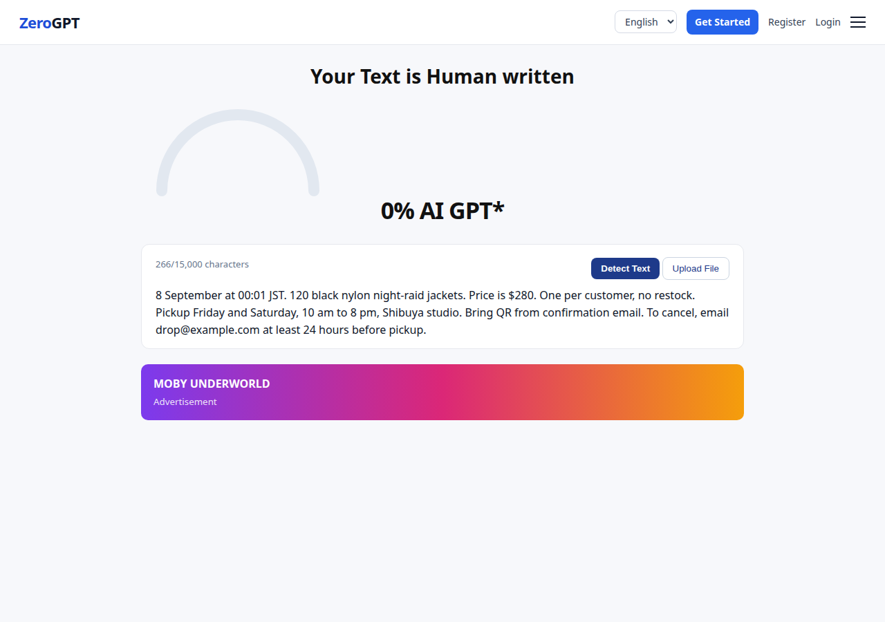
one free checker. the slop cried.
Input brief and source images
Your draft
In today's fast-paced world of next-generation streetwear, we are absolutely thrilled to announce a truly game-changing, seamless midnight drop — a robust tapestry of nocturnal craft that will unlock the full potential of your rotation. It's not just a jacket, it's a testament to after-hours excellence. Starting 8 September at 00:01 JST, valued members can delve into our drop portal and claim one of 120 black nylon night-raid jackets for $280. This isn't merely a price — it's an opportunity to leverage a seamless allocation: one per customer. No restock. Pickup is Friday and Saturday, 10 am to 8 pm, at the Shibuya studio. Bring the QR from your confirmation email. To cancel, email drop@example.com at least 24 hours before pickup. As we all know, it's important to note that this landmark moment underscores our commitment to help you navigate the complexities of modern style. Arguably, quite possibly, some might say this is the future. Dive in. Unlock. Thrive.
Open workflow ↗Steal thisDownload workflowOriginal sampled graphExplore MCP tools ↗
Messy dump → plan
Cover still for the Choice→Fable first-click — messy invoices dashboard becoming a five-step plan. Card art only; no paid Claude Fable 5.1 QC transcript was saved. Open the graph from Examples — Choice picks five numbered steps, a GitHub PR body, or a failing-test first.
{kind=link}
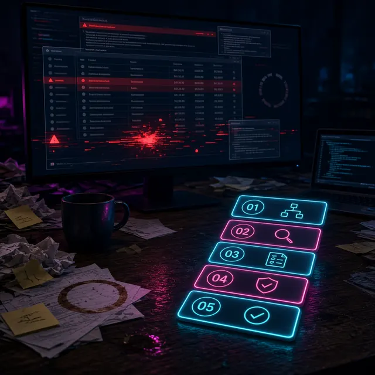
Cover still for the Choice→Fable first-click. No paid Claude Fable 5.1 QC transcript was saved. Open the graph from Examples — Choice picks the output shape, Fable 5.1 plans the invoices dump.
Input brief and source images
Messy dump
ok so invoices in the next.js app-router dashboard is a crime scene. the table renders rows. csv export returns 200 OK of the PAGE html because /invoices/export is still a page.tsx, not a route handler. the date range lives in useState so the server pager has never heard of it and we keep fetching page 3 of the unfiltered universe. PM wants the last filter saved in localStorage like a tarot reading. empty state is the word "no data" floating in a void. export button does not disable in flight so finance double-clicks and we email them two html files named invoices.csv. do NOT rewrite billing. a test would be a kindness. also i keep pasting this into the custom-endpoints ticket — those are different files. i am begging you.
Shape
exactly five numbered steps
Open workflow ↗Steal thisDownload workflowOriginal sampled graphExplore MCP tools ↗
Favicon concept
A crisp charcoal field with one electric-cyan lightning chevron. Readable silhouette. This is a raster concept; inspect it at small sizes and export the icon formats your app needs.

Input brief and source images
Brand
Volt — pocket night-ride radio for couriers. One sharp lightning-bolt chevron. Matte charcoal field, single electric-cyan mark. No letters.
Open workflow ↗Steal thisDownload workflowOriginal sampled graphExplore MCP tools ↗
Transparent brand sticker
Cover is reused Volt bolt card art from examples/gallery/favicon/preview.webp (the Favicon concept glyph), pending a true Ideogram V3 Generate Transparent QC still — no paid ideogram-v3-generate-transparent or NanoGPT run this PR. Job is a flat die-cut brand sticker overlay with clean alpha: matte-charcoal field, ONE electric-cyan lightning-bolt chevron for Volt pocket night-ride radio / courier brand; no letters. Distinct from Favicon (GLM Flash + Muse opaque square glyph) and Product cutout / BiRefNet V2 (upload → knock out background). Open the graph from Examples — Brand brief is the Volt sticker sentence; Sticker pins ideogram-v3-generate-transparent at 1:1. Catalog ~$0.06 balanced; image node does not forward rendering_speed modelOpts. Inspect native alpha; print-sheet conversion stays separate. No LLM. No upload.
{kind=link}
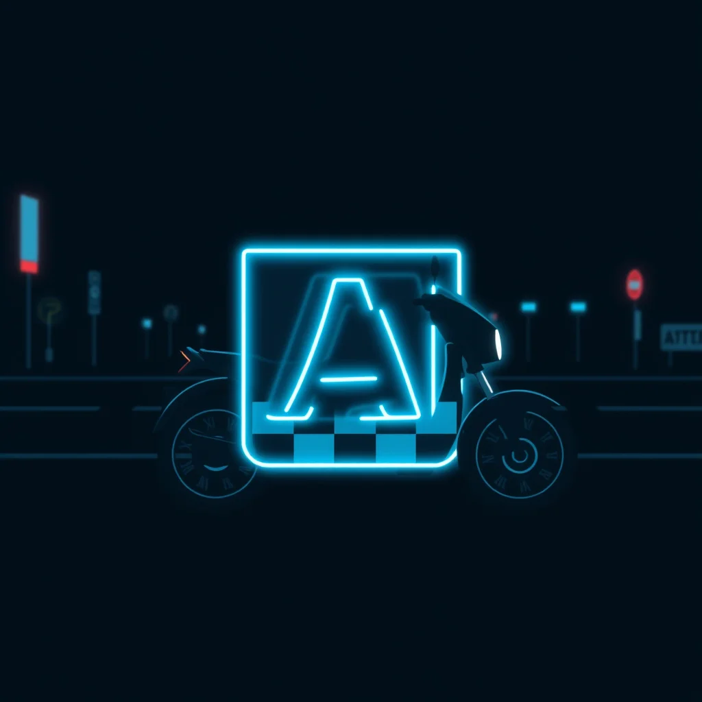
Cover is reused Volt bolt card art from examples/gallery/favicon/preview.webp (the Favicon concept glyph), pending a true Ideogram V3 Generate Transparent QC still — no paid ideogram-v3-generate-transparent or NanoGPT run this PR. Job is a flat die-cut brand sticker overlay with clean alpha: matte-charcoal field, ONE electric-cyan lightning-bolt chevron for Volt pocket night-ride radio / courier brand; no letters. Distinct from Favicon (GLM Flash + Muse opaque square glyph) and Product cutout / BiRefNet V2 (upload → knock out background). Open the graph from Examples — Brand brief is the Volt sticker sentence; Sticker pins ideogram-v3-generate-transparent at 1:1. Catalog ~$0.06 balanced; image node does not forward rendering_speed modelOpts. Inspect native alpha; print-sheet conversion stays separate. No LLM. No upload.
Input brief and source images
Brand brief
Flat die-cut brand sticker overlay with a clean transparent alpha background. One matte-charcoal rounded field, generous empty transparent margins around the sticker silhouette. On that charcoal field, ONE sharp electric-cyan lightning-bolt chevron mark for Volt — a pocket night-ride radio / courier brand. No letters, initials, wordmark, or Volt text. No second mark. Flat graphic sticker: solid fills, crisp edges, no drop shadow, no bevel, no paper texture, no checkerboard, no mockup, no phone, no UI screen, no product photo, no wet asphalt, no courier, no radio. Centered on a square canvas.
Open workflow ↗Steal thisDownload workflowOriginal sampled graphExplore MCP tools ↗
Volt drop poster
Cover is a local placeholder (charcoal field + VOLT / MIDNIGHT DROP lettering), pending a true Ideogram V4 Instant QC still — no paid ideogram/v4/instant or NanoGPT run this PR. Job is a text→sharp brand/drop poster WITH lettering: matte-charcoal Volt night-ride drop, ONE electric-cyan lightning-bolt chevron, VOLT / MIDNIGHT DROP, hard cyan rim, dark slate. Flat poster graphic — not a product photo. Distinct from Transparent brand sticker (alpha, no letters), Favicon (GLM Flash + Muse opaque 16px glyph), Remove packaging text (strips lettering), and FIBO / cinematic / arena stills. Open the graph from Examples — Poster brief is the Volt drop sentence; Poster pins ideogram/v4/instant at 1024x1024. Catalog ~$0.0075 balanced; image node does not forward modelOpts. No LLM. No upload.
{kind=link}
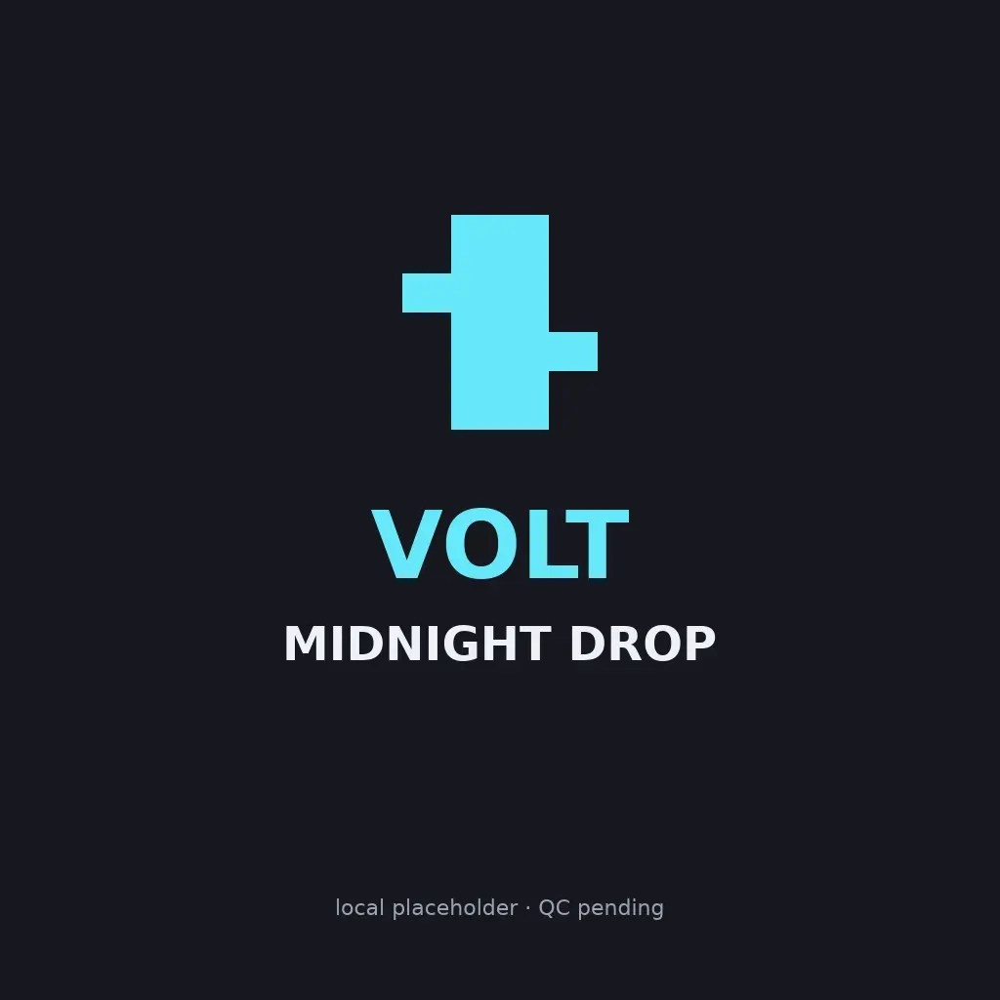
Cover is a local placeholder (charcoal field + VOLT / MIDNIGHT DROP lettering), pending a true Ideogram V4 Instant QC still — no paid ideogram/v4/instant or NanoGPT run this PR. First-click Poster brief is a matte-charcoal Volt night-ride drop poster: ONE electric-cyan lightning-bolt chevron, sharp VOLT / MIDNIGHT DROP letters, hard cyan rim, dark slate. Flat poster graphic — not a product photo. Do not treat the graph as having a reviewed poster. This is text-to-image typography poster generation (`ideogram/v4/instant` at size `1024x1024`, catalog $0.0075 at the balanced / auto cheap tier). Catalog also lists TURBO ~$0.00375, but the nanoodle image node does not forward modelOpts / additionalParams, so this graph leaves the default. Not Transparent brand sticker (alpha, no letters). Not Favicon concept (GLM Flash + Muse opaque 16px glyph). Not FIBO / cinematic / arena stills. Not Remove packaging text (strips lettering). No upload. No LLM. No paid NanoGPT / Ideogram generation was run for this addition.
Input brief and source images
Poster brief
Matte-charcoal Volt night-ride drop poster. ONE electric-cyan lightning-bolt chevron. Sharp letters: VOLT / MIDNIGHT DROP. Hard cyan rim, dark slate. Flat poster graphic — not a product photo.
Open workflow ↗Steal thisDownload workflowOriginal sampled graphExplore MCP tools ↗
editable volt mark
Cover is reused Volt bolt card art from examples/gallery/favicon/preview.webp (the Favicon concept glyph), pending a true Recraft V4.1 Vector QC still — no paid recraft-ai/recraft-v4.1/text-to-vector or NanoGPT run this PR. Job is an editable SVG logo mark: sharp electric-cyan lightning-chevron on a flat matte-charcoal square; no letters. Distinct from Favicon (GLM Flash + Muse opaque 16px glyph), Transparent brand sticker (PNG alpha), Product cutout / BiRefNet, arena recraft-v4 raster, and Ideogram V4 Instant poster (letters). Open the graph from Examples — Mark brief is the Volt chevron sentence; SVG mark pins recraft-ai/recraft-v4.1/text-to-vector at 1024x1024. Catalog ~$0.08. No LLM. No upload.
{kind=link}
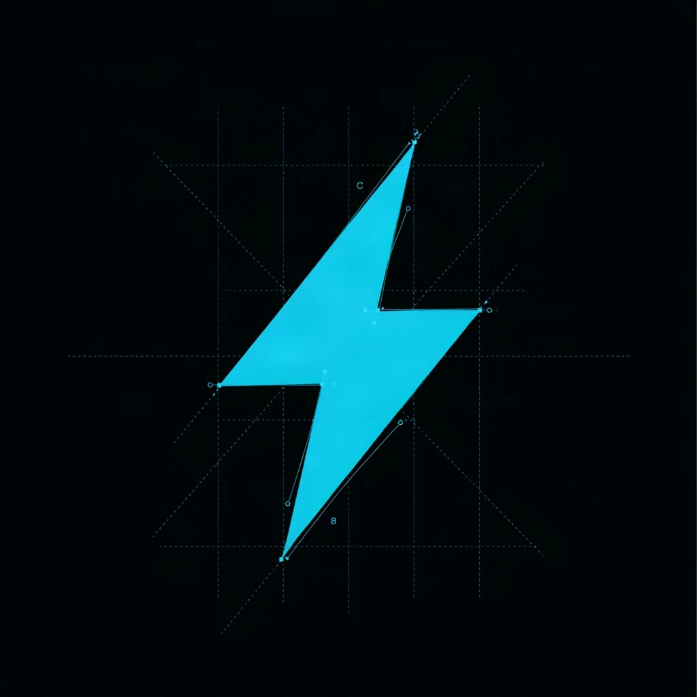
Cover is reused Volt bolt card art from examples/gallery/favicon/preview.webp (the Favicon concept glyph), pending a true Recraft V4.1 Vector QC still — no paid recraft-ai/recraft-v4.1/text-to-vector or NanoGPT run this PR. Job is an editable SVG logo mark: sharp electric-cyan lightning-chevron on a flat matte-charcoal square; no letters. Distinct from Favicon (Muse raster glyph), Transparent brand sticker (PNG alpha), Product cutout / BiRefNet, arena recraft-v4 raster, and Ideogram V4 Instant poster (letters). Open the graph from Examples — Mark brief is the Volt chevron sentence; SVG mark pins recraft-ai/recraft-v4.1/text-to-vector at 1024x1024. Catalog ~$0.08. No LLM. No upload.
Input brief and source images
Mark brief
Single geometric lightning-chevron mark for Volt, a pocket night-ride radio brand. Sharp electric-cyan (#00E5FF) chevron on a flat matte-charcoal (#1A1A1E) square. Clean vector paths, bold silhouette, generous margins, no letters, no gradients, no shadows, no radio mockup, no people. Logo-ready SVG.
Open workflow ↗Steal thisDownload workflowOriginal sampled graphExplore MCP tools ↗
pack type that sticks
Cover is reused Volt drop-poster card art from examples/gallery/ideogram-v4-instant-poster/preview.webp, pending a true MAI-Image-2.6 Flash QC still — no paid microsoft/mai-image-2.6-flash or NanoGPT run this PR. Job is product pack lettering on a Volt sleeve: VOLT / MIDNIGHT DROP / NIGHT CHANNEL. Distinct from Ideogram V4 Instant poster (square drop poster), SenseNova Volt dispatch card, and Qwen UI mockup. Open the graph — Pack brief is the sleeve sentence; Pack sleeve pins microsoft/mai-image-2.6-flash at 1152x864. Catalog ~$0.033. No LLM. No upload.
{kind=link}
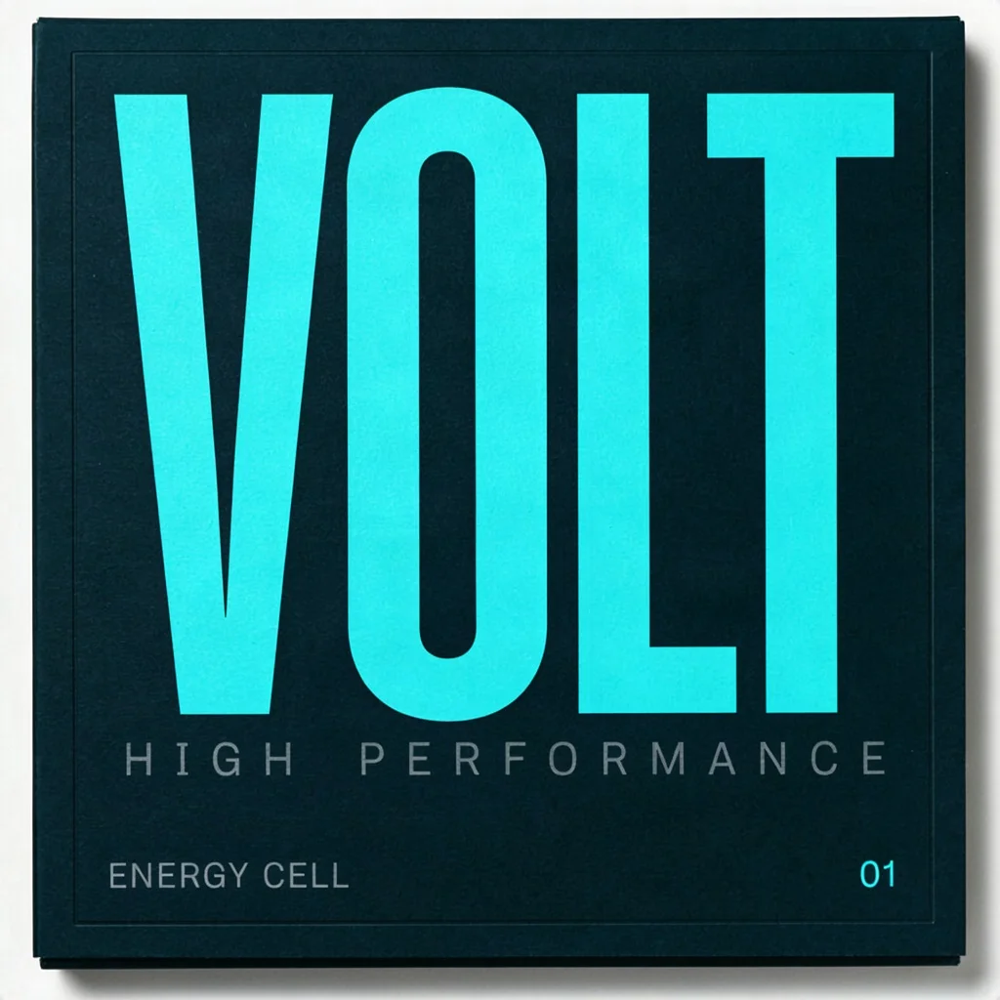
Cover is reused Volt drop-poster card art from examples/gallery/ideogram-v4-instant-poster/preview.webp, pending a true MAI-Image-2.6 Flash QC still — no paid microsoft/mai-image-2.6-flash or NanoGPT run this PR. Job is product pack lettering on a Volt sleeve: VOLT / MIDNIGHT DROP / NIGHT CHANNEL. Distinct from Ideogram V4 Instant poster (square drop poster), SenseNova Volt dispatch card, and Qwen UI mockup. Open the graph — Pack brief is the sleeve sentence; Pack sleeve pins microsoft/mai-image-2.6-flash at 1152x864. Catalog ~$0.033. No LLM. No upload.
Input brief and source images
Pack brief
Flat Volt pocket night-ride radio packaging sleeve, 4:3. Matte charcoal field, ONE electric-cyan lightning-bolt chevron, hard cyan rim. Readable pack type: VOLT on the top line, MIDNIGHT DROP on the second, small footer NIGHT CHANNEL. Clean product-pack lettering, generous margins, no photo of a radio in a scene, no people, no busy collage.
Open workflow ↗Steal thisDownload workflowOriginal sampled graphExplore MCP tools ↗
Product concept still
One coherent matte-charcoal Volt pocket radio on dark slate, electric-cyan lightning chevron, hard cyan rim. The result depicts a fictional product; it is not a photograph of merchandise.

Input brief and source images
Product
Volt — pocket night-ride radio for couriers. One compact unit on dark slate: matte charcoal chassis, sharp electric-cyan lightning-bolt chevron on the face. No letters, packaging or accessories.
Light
hard cyan rim light / charcoal seamless
Open workflow ↗Steal thisDownload workflowOriginal sampled graphExplore MCP tools ↗
Cinematic character still
A coherent chest-up hero still of a fictional motorcycle courier in a night alley under magenta and cyan key-art, red helmet under one arm. This is generated key-art, not a photograph of a real person.

Input brief and source images
Person
A fictional motorcycle courier in his mid-20s, East Asian appearance, neat black undercut slicked back, sharp jaw, dark eyes, a confident almost-smile, unobstructed face and mouth. Small black hoop earring. Black leather jacket with white racing stripes and a small red accent over a plain white tee, glossy red helmet tucked under one arm. Rain-slicked Tokyo alley at night, neon reflecting on wet pavement. One person only. No text, logos or extra people.
Light
hard magenta rim + cyan bounce / navy void
Frame
chest-up hero key-art, subject fills the frame, shallow depth of field
Open workflow ↗Steal thisDownload workflowOriginal sampled graphExplore MCP tools ↗
Night-ride identity restyle
Cover is reused night-courier card art from examples/gallery/cinematic-character-still/preview.webp, pending a true MiniMax H3 Image Edit QC — no paid minimax-h3/image-edit run this PR. Job is identity-preserving scene/outfit/light restyle. Distinct from Muse Edit (cleanup / backdrop relight), Cinematic character still / minimax-h3/text-to-image (T2I, no upload identity), and Product in a setting / combine-images (two-reference placement). Open the graph — upload a still; Identity restyle pins minimax-h3/image-edit at 1k. No LLM.

Cover is reused night-courier card art from examples/gallery/cinematic-character-still/preview.webp, pending a true MiniMax H3 Image Edit QC — no paid minimax-h3/image-edit run this PR. Job is identity-preserving scene/outfit/light restyle. Distinct from Muse Edit (cleanup / backdrop relight), Cinematic character still / minimax-h3/text-to-image (T2I, no upload identity), and Product in a setting / combine-images (two-reference placement). Open the graph — upload a still; Identity restyle pins minimax-h3/image-edit at 1k. No LLM.
Input brief and source images

Restyle
Keep the same face and body identity. Restyle into a Volt night-courier key still: matte charcoal kit, ONE electric-cyan lightning-bolt chevron on the chest, magenta rim + cyan bounce, wet neon alley bokeh behind. Locked medium portrait. No readable text, no extra people, no invented props.
Open workflow ↗Steal thisDownload workflowOriginal sampled graphExplore MCP tools ↗
Wear the night kit flux vto
{kind=link}
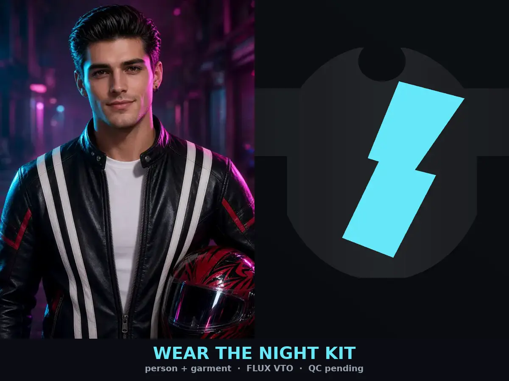
person + garment. FLUX tries the drop on. Cover is a local placeholder — no paid flux-pro/v1/vto QC this PR. Not combine-images / Muse Edit. Not edit-a-photo. Not h3-identity-restyle. Not cutout / SAM / sticker / Ideogram Instant / Recraft / MAI / SenseNova. Upload Person still + Garment still. Try-on pins flux-pro/v1/vto at auto (~$0.0575). No LLM.
The plates
person + garment.
FLUX tries the drop on
{kind=link}
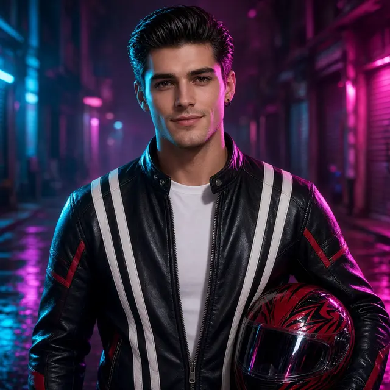
{kind=link}
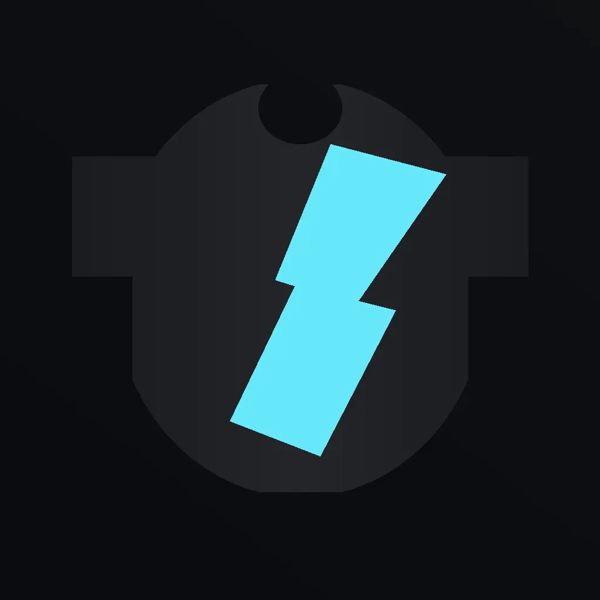
no paid QC. upload the plates.
Input brief and source images
Style brief
Apply the garment from image 2 onto the person in image 1. Preserve face and body identity and pose. Preserve garment materials and the single electric-cyan lightning-bolt chevron. Cool night-ride lighting (magenta rim + cyan bounce OK). Add no extra logos, text walls, props, or second people.
Open workflow ↗Steal thisDownload workflowOriginal sampled graphExplore MCP tools ↗
Character sprites
Cover is reused Iron Verdict card/game art from examples/iron-verdict/screenshot.png, pending a true Muse QC parts sheet — no paid meta/muse-image or NanoGPT run this PR. Job is a furnace-knight reference + four-quadrant rig parts sheet: GLM Flash writes the prompt, Muse text-to-image paints the canonical character at 1:1, Muse edit cuts isolated parts at 1:1, local resize fits 768. Feeds the character-sprites skill and Iron Verdict. Distinct from cinematic-character-still (hero key-art). Open the graph from Examples — rewrite Character; Character designer pins z-ai/glm-5.3-flash; Canonical character pins meta/muse-image/text-to-image @ 1:1; Rig parts pins meta/muse-image/edit @ 1:1. Export preview is a local 768 fit.
{kind=link}
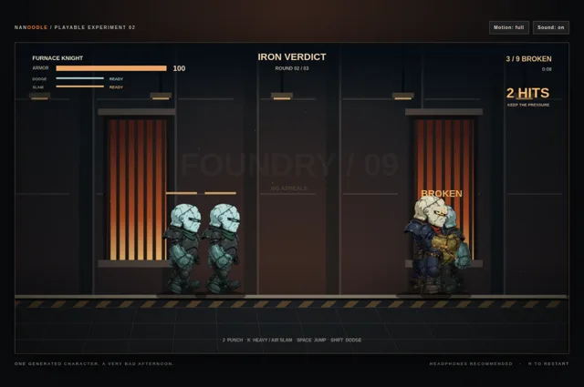
Cover is reused Iron Verdict card/game art from examples/iron-verdict/screenshot.png, pending a true Muse QC parts sheet — no paid meta/muse-image or NanoGPT run this PR. Job is a furnace-knight reference + four-quadrant rig parts sheet: GLM Flash writes the prompt, Muse text-to-image paints the canonical character at 1:1, Muse edit cuts isolated parts at 1:1, local resize fits 768. Feeds the character-sprites skill and Iron Verdict. Distinct from cinematic-character-still (hero key-art). Open the graph from Examples — rewrite Character; Character designer pins z-ai/glm-5.3-flash; Canonical character pins meta/muse-image/text-to-image @ 1:1; Rig parts pins meta/muse-image/edit @ 1:1. Export preview is a local 768 fit.
Input brief and source images
Character
A compact furnace knight with a cracked ivory helmet, narrow glowing amber visor, dark navy armor, a short rust-red scarf, oversized weathered brass gauntlets and heavy boots. Determined, heavy, battle-scarred. No weapon, no wings. Stylized hand-painted 2D action-platformer art with strong outlines and an instantly readable silhouette.
Open workflow ↗Steal thisDownload workflowOriginal sampled graphExplore MCP tools ↗
Cool catalog cleanup
Cover still is a Volt night-ride radio on matte charcoal — card art for the new first-click (hard cyan rim, magenta bounce). The saved Clean_product_photo.webp and product-input.png are the earlier 5 September warm-white amber-bottle sample; they do not match this first-click until a later regen. Compare real product markings and proportions before using a generated edit commercially.

Input brief and source images

Edit request
Prepare this product photo for a cool night-ride catalog. Preserve the exact product shape, color, materials, markings and visible text. Replace the background with matte charcoal seamless paper (near-black void, no gradients or fake environment), remove unrelated background clutter, and use hard electric-cyan rim light with a soft magenta bounce fill and a subtle natural contact shadow. Keep the whole product visible and the original camera angle. Add no accessories, props, labels or branding.
Open workflow ↗Steal thisDownload workflowOriginal sampled graphExplore MCP tools ↗
Product background cutout
Cover still is the reused FIBO Volt night-ride radio plate, pending a true BiRefNet V2 QC cutout — no paid birefnet/v2 run this PR. Job is a transparent product background cutout for compositing, not a relit Clean product photo catalog. Open the graph from Examples — upload a product still; Transparent cutout knocks the background and keeps fine edges. Distinct from Clean product photo (Muse Edit relights the backdrop). Export preview is a local 1024 fit.
{kind=link}
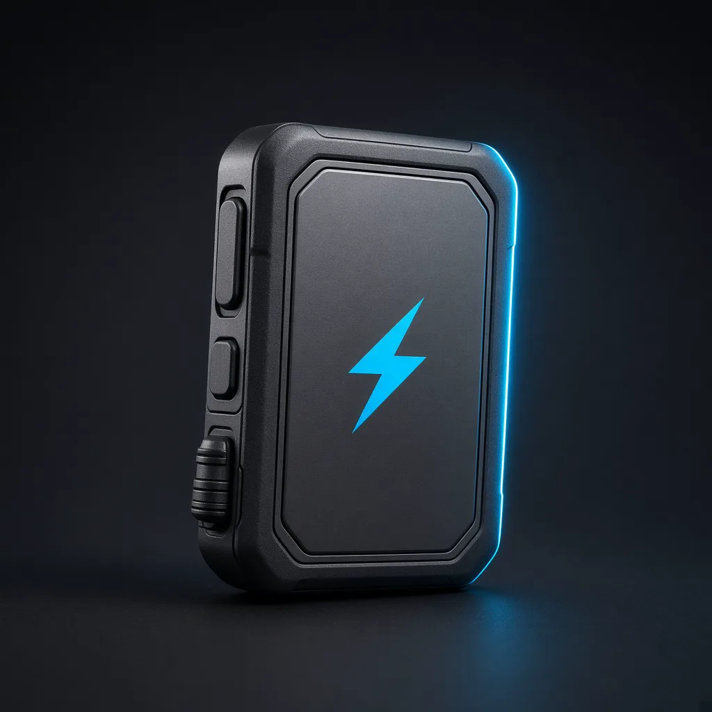
Cover uses the reused FIBO Volt night-ride radio plate (examples/gallery/fibo-studio-still/Still.png), pending a true BiRefNet V2 QC cutout — no paid birefnet/v2 run this PR. Job is a transparent product background cutout for compositing, not a relit Clean product photo catalog. Open the graph from Examples — upload a product still; Transparent cutout knocks the background and keeps fine edges. Export preview is a local 1024 fit.
Input brief and source images

Cutout request
Remove the background. Preserve the exact product silhouette, materials, markings and fine edges. Return a transparent cutout. Add no accessories, props, labels or branding.
Open workflow ↗Steal thisDownload workflowOriginal sampled graphExplore MCP tools ↗
Text-selected isolate
Cover is reused Volt card art from the combine-images wet neon alley plate, pending a true SAM 3 QC isolate — no paid sam3-image run this PR. Job is text-selected isolate: name a region (the Volt radio / cyan lightning chevron) in a cluttered courier desk or wet neon alley. Distinct from Product cutout / BiRefNet V2, which knocks out the whole background. Open the graph from Examples — upload a cluttered scene; Isolate names the object; Text-selected isolate pins sam3-image at auto. Export preview is a local 1024 fit.

Cover is reused Volt card art from examples/gallery/combine-images/preview.webp (wet neon alley + matte-charcoal night-ride radio), pending a true SAM 3 QC isolate — no paid sam3-image run this PR. Job is text-selected isolate: name a region (the Volt radio / cyan lightning chevron) in a cluttered courier desk or wet neon alley. Distinct from Product cutout / BiRefNet V2, which knocks out the whole background. Open the graph from Examples — upload a cluttered scene; Isolate names the object; Text-selected isolate pins sam3-image at auto. Export preview is a local 1024 fit.
Input brief and source images
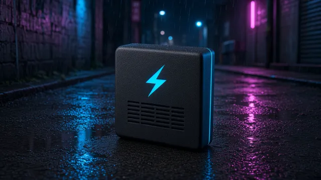
Isolate
the matte-charcoal Volt pocket night-ride radio with one electric-cyan lightning-bolt chevron
Open workflow ↗Steal thisDownload workflowOriginal sampled graphExplore MCP tools ↗
P-Image Upscale
Cover is reused Volt card art from the product-cutout / FIBO night-ride radio plate, pending a true P-Image Upscale QC still — no paid pruna-ai/p-image/upscale run this PR. Job is 2× resolution upscale (size "2" / 2 megapixels): preserve shape, materials, markings and the electric-cyan lightning-bolt chevron. Distinct from Clean product photo / Muse Edit (relight), Product cutout / BiRefNet V2 (knock-out), and Text-selected isolate / SAM 3. Open the graph from Examples — upload a product still; Detail brief preserves the Volt radio; Upscaled still pins pruna-ai/p-image/upscale at size 2. Export preview is a local 1024 fit.

Cover is reused Volt card art from examples/gallery/product-cutout/preview.webp (the reused FIBO night-ride radio plate), pending a true P-Image Upscale QC still — no paid pruna-ai/p-image/upscale run this PR. Job is 2× resolution upscale (size "2" / 2 megapixels): preserve shape, materials, markings and the electric-cyan lightning-bolt chevron. Distinct from Clean product photo / Muse Edit (relight), Product cutout / BiRefNet V2 (knock-out), and Text-selected isolate / SAM 3. Open the graph from Examples — upload a product still; Detail brief preserves the Volt radio; Upscaled still pins pruna-ai/p-image/upscale at size 2. Export preview is a local 1024 fit.
Input brief and source images
Detail brief
Preserve the exact product shape, materials, markings and the electric-cyan lightning-bolt chevron on this matte-charcoal Volt pocket night-ride radio. Sharpen fine edges only. Do not restyle, recolor, invent props, or change composition.
Open workflow ↗Steal thisDownload workflowOriginal sampled graphExplore MCP tools ↗
Remove packaging text
Cover is reused Volt night-ride poster art from examples/gallery/image-model-arena/preview.webp (NIGHT RIDE / TUE 9 SEP lettering), pending a true Ideogram V3 Remove Text QC — no paid ideogram-v3-remove-text run this PR. Job is lettering cleanup on a flat packaging / promo card. Distinct from Muse Edit, BiRefNet, SAM 3, P-Image Upscale, and transparent sticker. Open the graph — upload a lettered still; Remove lettering pins ideogram-v3-remove-text at auto. Edit prompt is a runner instruction (image-only). Export preview is a local 1024 fit.
{kind=link}
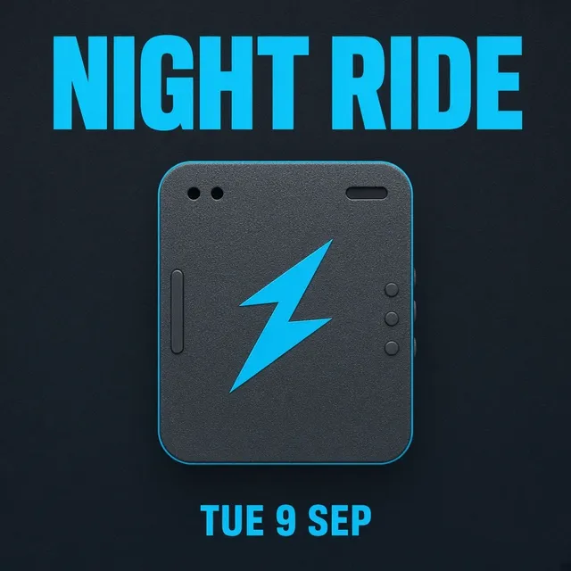
Cover is reused Volt night-ride poster art from examples/gallery/image-model-arena/preview.webp (NIGHT RIDE / TUE 9 SEP lettering), pending a true Ideogram V3 Remove Text QC — no paid ideogram-v3-remove-text run this PR. Job is lettering cleanup on a flat packaging / promo card. Distinct from Muse Edit, BiRefNet, SAM 3, P-Image Upscale, and transparent sticker. Open the graph — upload a lettered still; Remove lettering pins ideogram-v3-remove-text at auto. Edit prompt is a runner instruction (image-only). Export preview is a local 1024 fit.
Input brief and source images

Remove lettering (runner instruction)
Remove all lettering, captions, watermarks and promotional text from this flat graphic. Preserve the exact product/artwork, materials, colors, marks and composition. Fill removed text regions so the design looks continuous. Do not restyle, recolor, invent props, or change layout.
Open workflow ↗Steal thisDownload workflowOriginal sampled graphExplore MCP tools ↗
Night-ride product placement
Cover still is a Volt pocket night-ride radio in a wet neon alley — card art for the new first-click (matte charcoal, cyan lightning chevron, cyan/magenta night-ride light). The saved Product_in_setting.webp, product-input.png and setting-input.jpg are the earlier 5 September amber-bottle / tea-desk sample; they do not match this first-click until a later regen. Generated composites still need checks for exact product fidelity.

Input brief and source images


Placement brief
Place the Volt pocket night-ride radio from image 1 naturally into the wet night alley from image 2 — a neon wet-asphalt courier lane in cyan and magenta night-ride light. The product is matte charcoal with a sharp electric-cyan lightning-bolt chevron. Preserve the product shape, proportions, materials, color and visible markings. Preserve the setting layout and camera perspective. Place one instance on a plausible supporting surface; match scale, lighting and contact shadows. Add no extra products, people, text or decorative props.
Open workflow ↗Steal thisDownload workflowOriginal sampled graphExplore MCP tools ↗
Night-ride poster compare
Cover still is a Volt night-ride poster — card art for the first-click (NIGHT RIDE / TUE 9 SEP, charcoal radio, cyan lightning chevron). The saved Contender_1–4 images are the earlier 5 September FIX A FLAT / tire-lever sample; they do not match this first-click until a later regen. Contender 2's saved still is the Krea 2 Turbo sample — historical, not regenerated. Open workflow pins GPT Image 2.5 Flare as Contender 2; the original sampled graph is retained below. One prompt demonstrates why task-specific checks matter; it is not a general ranking.


Input brief and source images
Shared test brief
Create a square poster for a Volt night-ride. Exact heading: NIGHT RIDE. Exact footer: TUE 9 SEP. One matte-charcoal pocket night-ride radio with a sharp electric-cyan lightning-bolt chevron sits on a dark slate / near-black void. Flat editorial poster illustration, charcoal and cyan palette, clear hierarchy, large readable type. No extra words or objects.
Open workflow ↗Steal thisDownload workflowOriginal sampled graphExplore MCP tools ↗
Travel postcard illustration
A coherent illustrated night market with a clear food-stall focal point. This is an illustration, not a documentary image or a print-ready layout with typeset copy.

Input brief and source images
Place
Raohe night market, Taipei — grilled squid smoke hanging in the lane, red lanterns, wet asphalt, one stall still roaring
Vibe
warm illustrated travel print
Open workflow ↗Steal thisDownload workflowOriginal sampled graphExplore MCP tools ↗
Night-ride radio still
Cover still is the Volt night-ride radio on rain-slick asphalt — card art for the new first-click. The saved five-second MP4 is the earlier 5 September tea-mug steam sample (mug, notebook, desk); it does not match this still. A seamless loop is not promised. Open workflow uses the current model ID after a provider-name migration; the original sampled graph is retained below.
Input brief and source images
Still brief
A matte charcoal Volt pocket night-ride radio on rain-slick wet asphalt at night. Sharp electric-cyan lightning-bolt chevron on the face, no letters. Close three-quarter view, entire radio visible, clear silhouette. Magenta neon from camera-left, cyan bounce in the puddle, faint rain beads on the shell. No text, logos or people.
Motion brief
Locked camera for five seconds. Thin rain beads slide slowly down the radio's charcoal shell. Magenta and cyan neon shimmer in the puddle. The radio and asphalt remain completely still. Preserve their shape and placement; no cuts, new objects or camera motion.
Open workflow ↗Steal thisDownload workflowOriginal sampled graphExplore MCP tools ↗
frame wakes up
Cover is reused Volt card art from the product-cutout / FIBO night-ride radio plate, pending a true Grok Imagine 1.5 QC clip — no paid xai/grok-imagine-video/v1.5/image-to-video run this PR. Job is still → video: Muse draws the rooftop-ledge radio; Grok Imagine Video 1.5 rides it 4s at 480p with one cyan pulse. Distinct from photo-to-video / MiniMax H3 Spicy (locked-camera asphalt rain, 5s). Open the graph — Still brief + Motion brief; Animated clip pins xai/grok-imagine-video/v1.5/image-to-video at 480p / 4s. A seamless loop is not promised.
{kind=link}
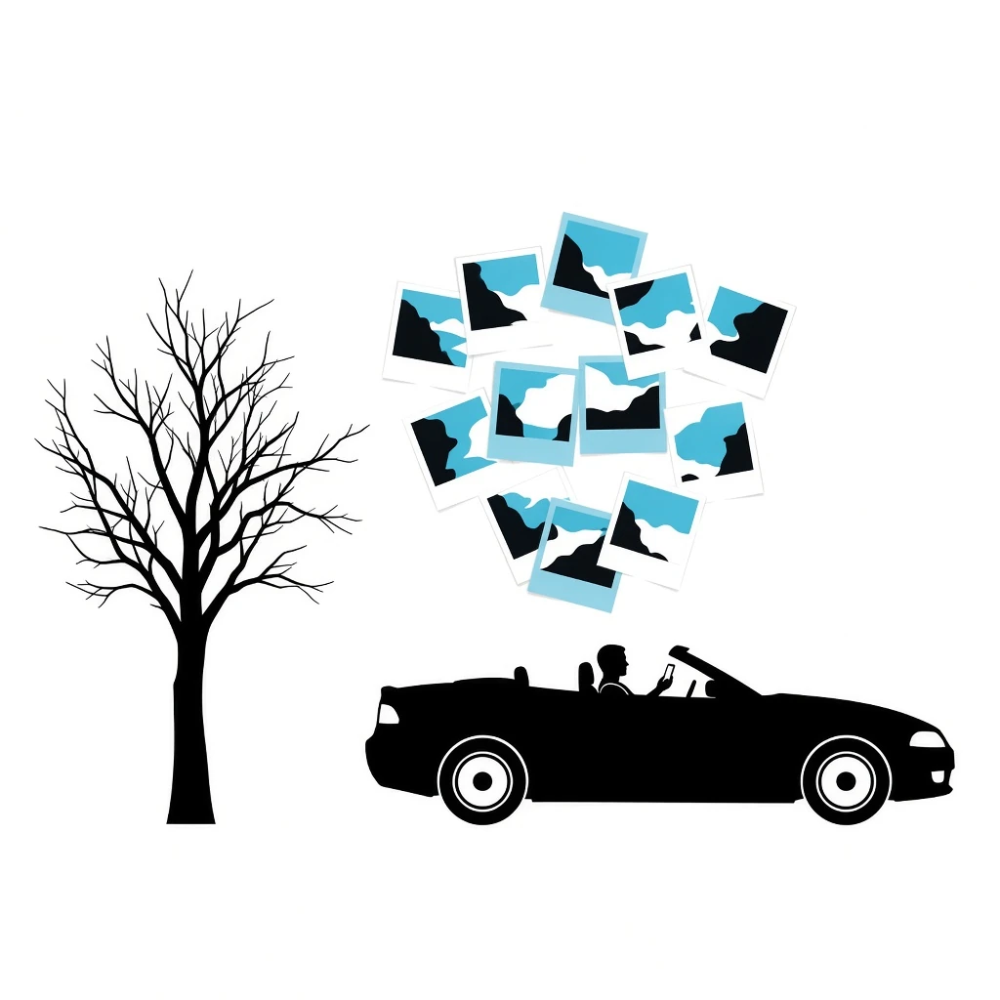
Cover is reused Volt card art from the product-cutout / FIBO night-ride radio plate, pending a true Grok Imagine 1.5 QC clip — no paid xai/grok-imagine-video/v1.5/image-to-video run this PR. Job is still → video: Muse draws the rooftop-ledge radio; Grok Imagine Video 1.5 rides it 4s at 480p with one cyan pulse. Distinct from photo-to-video / MiniMax H3 Spicy (locked-camera asphalt rain, 5s). Open the graph — Still brief + Motion brief; Animated clip pins xai/grok-imagine-video/v1.5/image-to-video at 480p / 4s. A seamless loop is not promised.
Input brief and source images
Still brief
A compact matte-charcoal pocket night-ride radio resting on a wet rooftop concrete ledge. One sharp lightning-bolt chevron in electric cyan on the faceplate. Cyan edge light from camera-right, night-city skyline below the ledge, close three-quarter view, entire radio visible, clear chevron silhouette, no text or logos.
Motion brief
Locked camera for four seconds. Subtle rain beads on the rooftop ledge. Midway, the electric-cyan lightning chevron pulses once. The radio stays still. Preserve its shape and placement; no cuts, new objects or camera motion.
Open workflow ↗Steal thisDownload workflowOriginal sampled graphExplore MCP tools ↗
drive the still with motion
Cover is reused Volt card art from the product-cutout / FIBO night-ride radio plate — upload placeholders only, no fake driven thumb. Pending a true Wan Animate 2 QC clip — no paid `wan-22-animate-2` or NanoGPT run this PR. Job is still + driver → motion transfer @480p (~$0.04/s; ~2–3s ≈ $0.08–0.12). Distinct from prompt-i2v (photo-to-video / grok-imagine-still / wan-still-audio), InfiniteTalk / talking-avatar, H3 Max multi-angle, and P-Video rewrite. Open the graph — upload a still + a short driver; Driven clip pins `wan-22-animate-2` @ 480p. No committed media in-repo.
{kind=link}
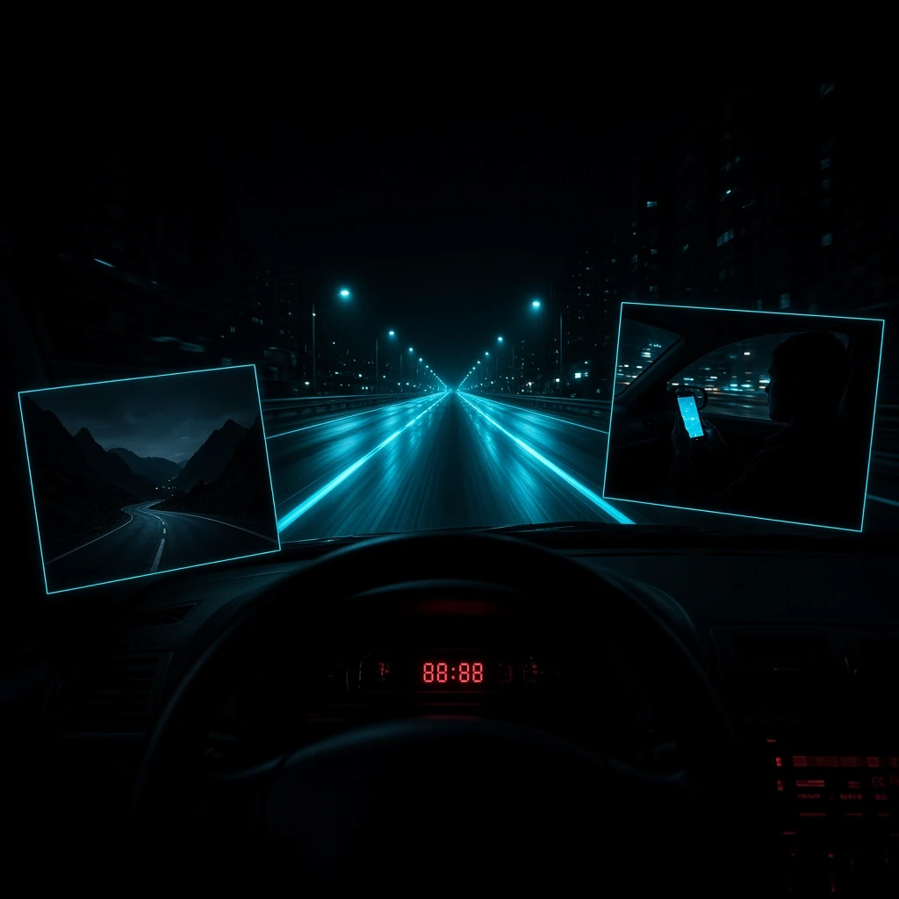
Cover is reused Volt card art from the product-cutout / FIBO night-ride radio plate — upload placeholders only, no fake driven thumb. Pending a true Wan Animate 2 QC clip — no paid `wan-22-animate-2` or NanoGPT run this PR. Job is still + driver → motion transfer @480p (~$0.04/s; ~2–3s ≈ $0.08–0.12). Distinct from prompt-i2v (photo-to-video / grok-imagine-still / wan-still-audio), InfiniteTalk / talking-avatar, H3 Max multi-angle, and P-Video rewrite. Open the graph — upload a still + a short driver; Driven clip pins `wan-22-animate-2` @ 480p. No committed media in-repo.
Input brief and source images
Character/product still
Upload a still. First-click story is a matte-charcoal Volt pocket night-ride radio or courier with one electric-cyan lightning chevron. No committed still in-repo.
Driver motion
Upload a short driver clip (~2–3s). First-click is a simple hand-wave / turn. No committed driver in-repo.
Motion prompt
Keep the matte-charcoal Volt pocket radio and cyan lightning chevron. Transfer only the driver motion — no new objects, no logo text, no hard cuts.
Open workflow ↗Steal thisDownload workflowOriginal sampled graphExplore MCP tools ↗
still breathes with sound
Cover is reused Volt card art from the product-cutout / FIBO night-ride radio plate, pending a true Wan 3.0 still+audio QC clip — no paid alibaba/wan-3.0/image-to-video or NanoGPT run this PR. Job is still → video with synced audio: Muse draws the railing-above-neon-alley radio; Wan 3.0 (`alibaba/wan-3.0/image-to-video`) adds locked-cam breath at 480p / 2s with enable_audio=true (rain beads, LED pulse, faint alley hum). Distinct from frame wakes up / Grok Imagine 1.5 (rooftop pulse, 4s, no Wan audio) and photo-to-video / MiniMax H3 Spicy (asphalt rain, 5s). Open the graph — Still brief + Motion brief; Animated clip pins alibaba/wan-3.0/image-to-video at 480p / 2s / enable_audio. A seamless loop is not promised.
{kind=link}
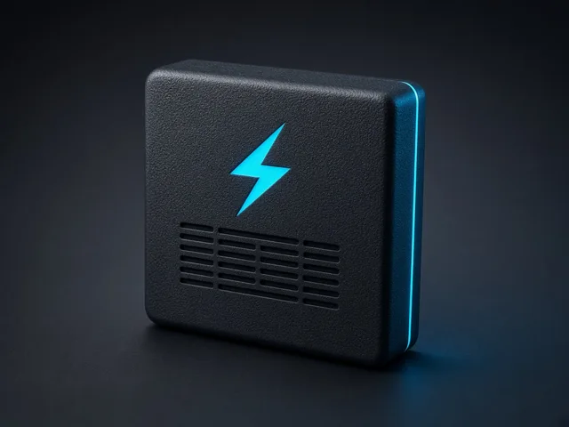
Cover is reused Volt card art from the product-cutout / FIBO night-ride radio plate, pending a true Wan 3.0 still+audio QC clip — no paid alibaba/wan-3.0/image-to-video or NanoGPT run this PR. Job is still → video with synced audio: Muse draws the railing-above-neon-alley radio; Wan 3.0 (`alibaba/wan-3.0/image-to-video`) adds locked-cam breath at 480p / 2s with enable_audio=true (rain beads, LED pulse, faint alley hum). Distinct from frame wakes up / Grok Imagine 1.5 (rooftop pulse, 4s, no Wan audio) and photo-to-video / MiniMax H3 Spicy (asphalt rain, 5s). Open the graph — Still brief + Motion brief; Animated clip pins alibaba/wan-3.0/image-to-video at 480p / 2s / enable_audio. A seamless loop is not promised.
Input brief and source images
Still brief
Matte charcoal Volt pocket night-ride radio on a rain-slick steel railing above a neon alley. Sharp electric-cyan lightning-chevron on the face, no letters. Three-quarter close, entire radio in frame. Magenta rim left, cyan puddle bounce, thin rain. Locked composition. No people, logos, or text.
Motion brief
Locked camera for two seconds. Subtle breath only: rain beads crawl on the steel railing, cyan puddle shimmer under the radio, one soft radio LED pulse. Faint alley hum in the generated audio. The radio stays still. Preserve its shape and placement; no whip-pans, cuts, new objects or camera motion.
Open workflow ↗Steal thisDownload workflowOriginal sampled graphExplore MCP tools ↗
Night-ride radio orbit
Cover is reused Volt card art from the product-cutout / FIBO night-ride radio plate, pending a true H3 Max Multi Angle QC clip — no paid minimax/h3-max/multi-angle/image-to-video run this PR. Job is a product-reveal camera orbit from an uploaded still: 480p / 5s / camera_motion=orbit-right. Camera moves; the product stays. Distinct from photo-to-video / MiniMax H3 Spicy (locked-camera rain) and omni-flash-turntable / Omni Flash 1.1 (text-to-video studio-plinth orbit). Open the graph from Examples — upload a product still; Orbit clip pins minimax/h3-max/multi-angle/image-to-video at 480p / 5s / orbit-right. A seamless loop is not promised.
{kind=link}
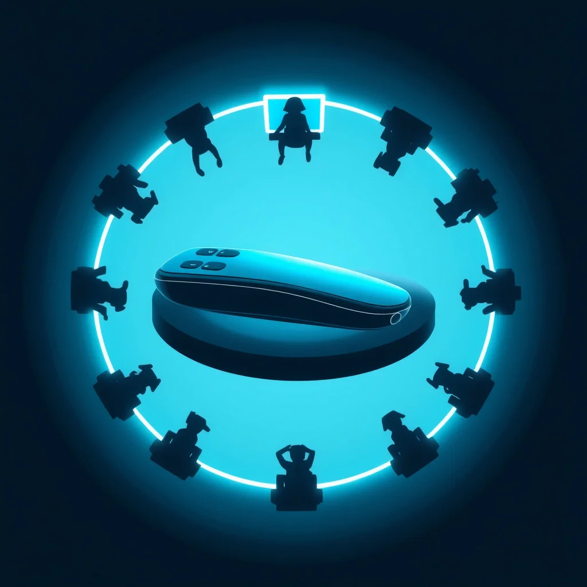
Cover is reused Volt card art from the product-cutout / FIBO night-ride radio plate, pending a true H3 Max Multi Angle QC clip — no paid minimax/h3-max/multi-angle/image-to-video run this PR. Job is a product-reveal camera orbit from an uploaded still: 480p / 5s / camera_motion=orbit-right. Camera moves; the product stays. Distinct from photo-to-video / MiniMax H3 Spicy (locked-camera rain) and omni-flash-turntable / Omni Flash 1.1 (text-to-video studio-plinth orbit). Open the graph from Examples — upload a product still; Orbit clip pins minimax/h3-max/multi-angle/image-to-video at 480p / 5s / orbit-right. A seamless loop is not promised.
Input brief and source images

Orbit brief
Only the camera moves: orbit around the subject, preserving the scene.
Open workflow ↗Steal thisDownload workflowOriginal sampled graphExplore MCP tools ↗
Crystal video upscale
Cover is reused Volt card art from the photo-to-video night-ride radio plate, pending a true Crystal QC clip — no paid clarity-ai/crystal-video-upscaler run this PR. Job is video target-megapixel upscale at target_megapixels=1 ($0.10/MP/s, min $0.10). Distinct from P-Image Upscale (still) and Night-ride radio orbit / Omni Flash (generate). Open the graph — upload a short clip; Upscaled clip pins clarity-ai/crystal-video-upscaler at 1 MP.
{kind=link}
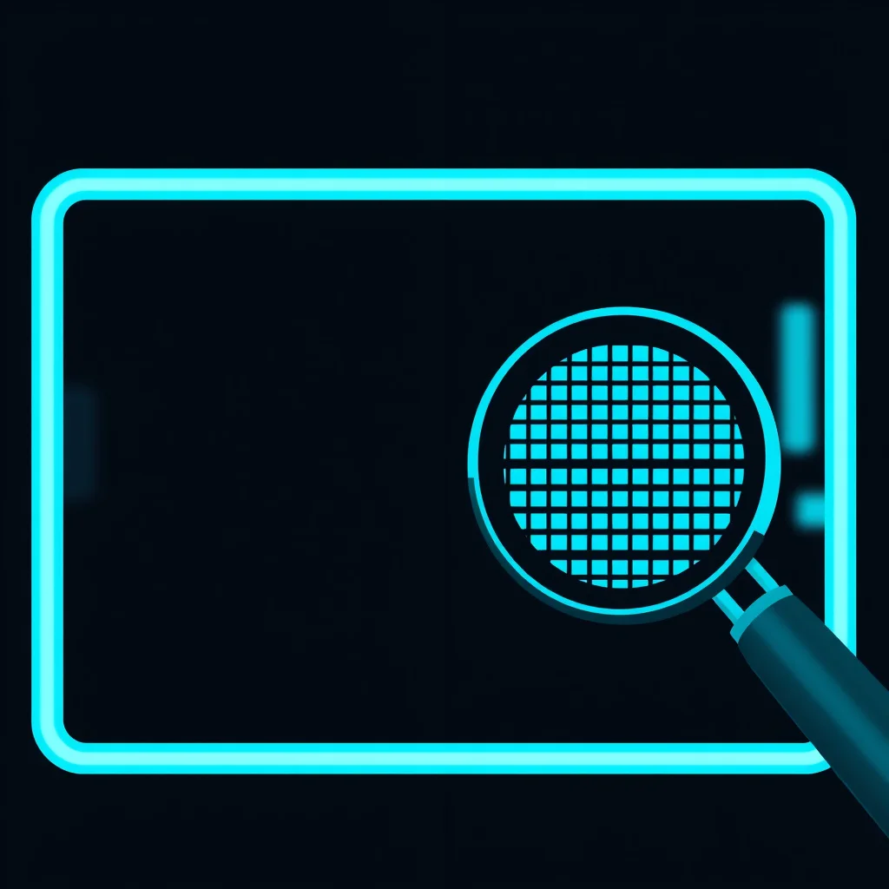
Cover is reused Volt card art from the photo-to-video night-ride radio plate, pending a true Crystal QC clip — no paid clarity-ai/crystal-video-upscaler run this PR. Job is video target-megapixel upscale at target_megapixels=1 ($0.10/MP/s, min $0.10). Distinct from P-Image Upscale (still) and Night-ride radio orbit / Omni Flash (generate). Open the graph — upload a short clip; Upscaled clip pins clarity-ai/crystal-video-upscaler at 1 MP.
Input brief and source images
Product clip
Upload a short clip. First-click story is a matte-charcoal Volt pocket night-ride radio with one electric-cyan lightning-bolt chevron. No committed clip in-repo.
Open workflow ↗Steal thisDownload workflowOriginal sampled graphExplore MCP tools ↗
rewrite the clip
Cover is reused Volt card art from the photo-to-video night-ride radio plate, pending a true P-Video Edit QC clip — no paid `pruna-ai/p-video/edit` run this PR. Job is prompt-rewrite at draft=true (~$0.025/s, ~$0.10 for ~4s) and can keep source audio. Distinct from Crystal video upscale and i2v (photo-to-video / Grok / H3 orbit / Omni Flash). Open the graph — upload a short clip; Rewrite brief stays on the Volt night-ride line; Rewritten clip pins `pruna-ai/p-video/edit` with draft=true. No committed clip in-repo.
{kind=link}
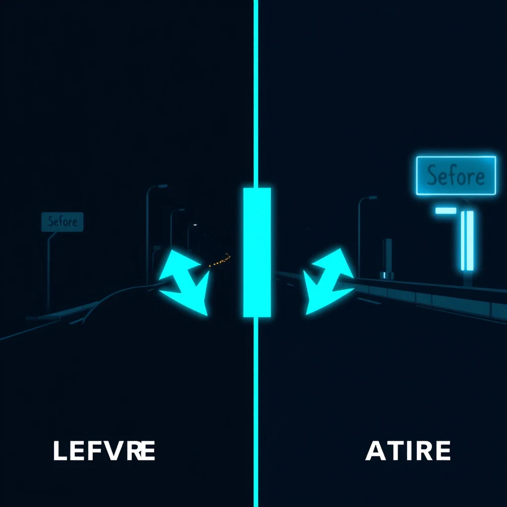
Cover is reused Volt card art from the photo-to-video night-ride radio plate, pending a true P-Video Edit QC clip — no paid `pruna-ai/p-video/edit` run this PR. Job is prompt-rewrite at draft=true (~$0.025/s, ~$0.10 for ~4s) and can keep source audio. Distinct from Crystal video upscale and i2v (photo-to-video / Grok / H3 orbit / Omni Flash). Open the graph — upload a short clip; Rewrite brief stays on the Volt night-ride line; Rewritten clip pins `pruna-ai/p-video/edit` with draft=true. No committed clip in-repo.
Input brief and source images
Product clip
Upload a short clip. First-click story is a matte-charcoal Volt pocket night-ride radio with one electric-cyan lightning-bolt chevron. No committed clip in-repo.
Rewrite brief
Keep the same matte-charcoal Volt pocket radio and cyan lightning chevron. Shift the alley to deeper magenta rim + cooler cyan bounce; thicken the rain beads; preserve source audio. No cuts, no new objects, no logo text.
Open workflow ↗Steal thisDownload workflowOriginal sampled graphExplore MCP tools ↗
foley the take
Cover is reused Volt alley card art from combine-images (wet neon alley) — vupload placeholder only, no fake foley thumb. No paid mirelo-ai/sfx1.6/video-to-video QC this PR. Video→foley: upload a silent clip, Mirelo lays synced SFX (~$0.01/s, ~4s ≈ $0.04). Not Night-ride SFX (text→SFX / ElevenLabs). Not Night-ride radio VO (xai-tts). Not Wan 3.0 still+audio. Not P-Video rewrite. Open the graph — Product clip → Foleyed clip.
{kind=link}
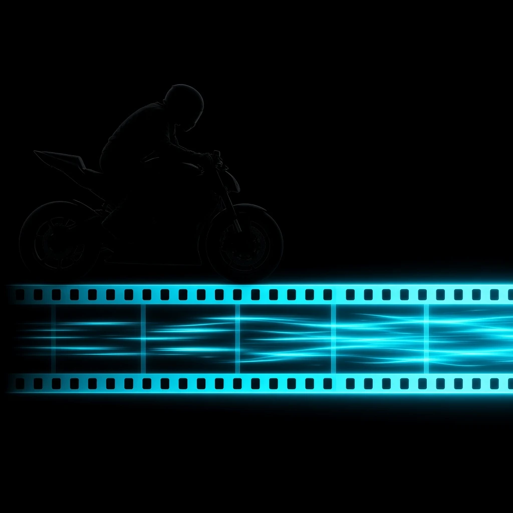
Cover is reused Volt alley card art from combine-images (wet neon alley) — vupload placeholder only, no fake foley thumb. No paid mirelo-ai/sfx1.6/video-to-video QC this PR. Video→foley: upload a silent clip, Mirelo lays synced SFX (~$0.01/s, ~4s ≈ $0.04). Not Night-ride SFX (text→SFX / ElevenLabs). Not Night-ride radio VO (xai-tts). Not Wan 3.0 still+audio. Not P-Video rewrite. Open the graph — Product clip → Foleyed clip.
Input brief and source images
Product clip
Upload a silent clip. First-click story is a matte-charcoal Volt pocket night-ride radio, charcoal/cyan night-ride alley take. No committed clip in-repo.
Open workflow ↗Steal thisDownload workflowOriginal sampled graphExplore MCP tools ↗
knock the alley off the clip
Cover is reused Volt card art from the photo-to-video night-ride radio plate — vupload placeholder only, pending a true Pixelcut QC clip. No paid `pixelcut/video-background-removal` run this PR. Job is video cutout at background=black (~$0.022/30 frames, ~$0.044 for ~2s). Not product-cutout / BiRefNet. Not sam3-isolate. Not Crystal upscale. Not P-Video rewrite. Not i2v / orbit / turntable. Open the graph — Product clip → Cutout clip pins `pixelcut/video-background-removal` with background=black (not transparent). No committed clip in-repo.
{kind=link}
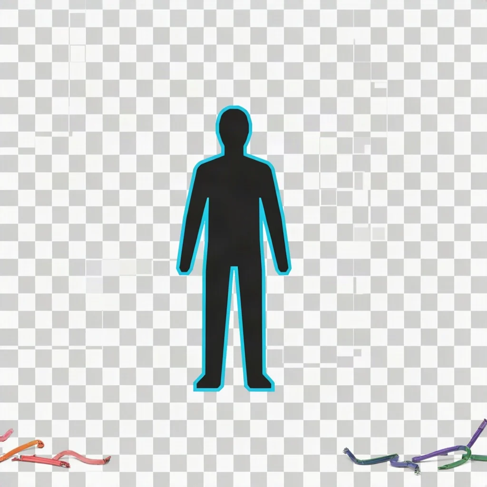
Cover is reused Volt card art from the photo-to-video night-ride radio plate — vupload placeholder only, pending a true Pixelcut QC clip. No paid `pixelcut/video-background-removal` run this PR. Job is video cutout at background=black (~$0.022/30 frames, ~$0.044 for ~2s). Not product-cutout / BiRefNet. Not sam3-isolate. Not Crystal upscale. Not P-Video rewrite. Not i2v / orbit / turntable. Open the graph — Product clip → Cutout clip pins `pixelcut/video-background-removal` with background=black (not transparent). No committed clip in-repo.
Input brief and source images
Product clip
Upload a short clip. First-click story is a matte-charcoal Volt pocket night-ride radio with one electric-cyan lightning-bolt chevron. Pixelcut drops the alley to solid black. No committed clip in-repo.
Open workflow ↗Steal thisDownload workflowOriginal sampled graphExplore MCP tools ↗
Night-ride product motion
Cover still is the Volt pocket night-ride radio on a charcoal plinth — card art for the first-click (hard cyan rim, electric-cyan lightning chevron, dark studio void). Sample Omni Flash QC clip pending — no paid google/gemini-omni-flash/v1.1 or NanoGPT run this PR. Job is text-to-video studio-plinth orbit: describe the object, pick one camera move, 360p / 5s / 16:9. Distinct from photo-to-video / MiniMax H3 Spicy (locked-camera rain) and h3-max-multi-angle / H3 Max Multi Angle (uploaded-still orbit). Open the graph from Examples — Object and Move stay on the Volt radio / quarter-orbit; Clip pins google/gemini-omni-flash/v1.1 at 360p / 5s. A seamless loop is not promised.
{kind=link}
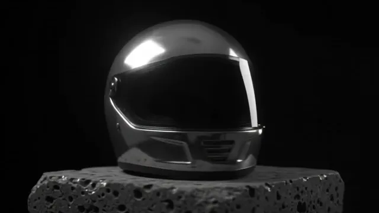
Cover still is the Volt pocket night-ride radio on a charcoal plinth — card art for the first-click (hard cyan rim, electric-cyan lightning chevron, dark studio void). Sample Omni Flash QC clip pending — no paid google/gemini-omni-flash/v1.1 or NanoGPT run this PR. Job is text-to-video studio-plinth orbit: describe the object, pick one camera move, 360p / 5s / 16:9. Distinct from photo-to-video / MiniMax H3 Spicy (locked-camera rain) and h3-max-multi-angle / H3 Max Multi Angle (uploaded-still orbit). Open the graph from Examples — Object and Move stay on the Volt radio / quarter-orbit; Clip pins google/gemini-omni-flash/v1.1 at 360p / 5s. A seamless loop is not promised.
Input brief and source images
Object
One compact matte-charcoal Volt pocket night-ride radio with a sharp electric-cyan lightning-bolt chevron on the face, resting on a charcoal stone plinth. Single hard cyan rim light from camera-right, deep shadow on the left, dark studio void. No letters, branding, extra props or text.
Move
camera makes a slow quarter-orbit; the radio stays still as hard cyan rim light rakes across the charcoal shell and cyan chevron
Open workflow ↗Steal thisDownload workflowOriginal sampled graphExplore MCP tools ↗
Volt dispatch screen
The final run preserves Tonight, Couriers, Radios, Tuesday 9 September, the three night-ride rows, courier ids, statuses and the 3-run summary without invented extra sections. Charcoal board, cyan New dispatch. This is a design-review image, not working UI.

Input brief and source images
Screen brief
Volt courier dispatch, desktop screenshot. Navigation: Tonight, Couriers, Radios. Header: Tuesday, 9 September. Main table: 21:00 Night-ride radio drop | Volt-07 | Ready; 22:30 Ridge handoff | Volt-12 | En route; 00:15 Warehouse dock | Volt-03 | Queued. Primary button: New dispatch. Summary: 3 runs, 1 ready for pickup.
Visual style
Charcoal background, electric-cyan accents, soft gray dividers, cyan primary button. Simple sans-serif, readable table rows, generous spacing. Flat front-facing screenshot, no browser or device frame, annotations, glow, gradients or unrelated charts. Preserve supplied labels and values. Show only specified content. No extra sections, metrics, rows or invented brand names.
Open workflow ↗Steal thisDownload workflowOriginal sampled graphExplore MCP tools ↗
Volt dispatch card
Cover is reused Volt night-ride poster art from examples/gallery/image-model-arena/preview.webp (NIGHT RIDE / TUE 9 SEP), pending a true SenseNova U1 Infographic QC still — no paid sensenova-u1-infographic or NanoGPT run this PR. Job is a structured Volt dispatch card: matte charcoal panel, ONE electric-cyan lightning-bolt chevron, DROP / ZONE / ETA. Short labels, no text walls. Distinct from UI mockup (render-a-mockup / Qwen), travel postcard, FIBO studio still, Muse cinematic, transparent sticker, Ideogram V4 Instant poster, remove-text packaging cleanup, and Flare arena. Open the graph from Examples — Dispatch brief is the Volt card sentence; Infographic pins sensenova-u1-infographic at 16:9. Catalog ~$0.05. No LLM. No upload.

Cover is reused Volt night-ride poster art from examples/gallery/image-model-arena/preview.webp (NIGHT RIDE / TUE 9 SEP), pending a true SenseNova U1 Infographic QC still — no paid sensenova-u1-infographic or NanoGPT run this PR. Job is a structured Volt dispatch card: matte charcoal panel, ONE electric-cyan lightning-bolt chevron, DROP / ZONE / ETA. Short labels, no text walls. Distinct from UI mockup (render-a-mockup / Qwen), travel postcard, FIBO studio still, Muse cinematic, transparent sticker, Ideogram V4 Instant poster, remove-text packaging cleanup, and Flare arena. Open the graph — Dispatch brief is the Volt card sentence; Infographic pins sensenova-u1-infographic at 16:9. Catalog ~$0.05. No LLM. No upload.
Input brief and source images
Dispatch brief
Volt night-courier dispatch card. Structured infographic still, 16:9. Matte charcoal panel. ONE electric-cyan lightning-bolt chevron mark. Cyan and magenta accents. Three blocks only: DROP Night-ride / ZONE Ridge / ETA 22:30. Short labels, no paragraphs. Dark Volt vibe matching the nanoodle editor. Not a photo, not a UI screenshot, not a postcard. No busy collage.
Open workflow ↗Steal thisDownload workflowOriginal sampled graphExplore MCP tools ↗
Original closing-credits song
An ~182-second synthwave rooftop-getaway sample matching the first-click brief. Chorus: "I made it out, but the city wants me back". Regenerated 8 September 2026. No new paid audio-model review was run.
{kind=link}
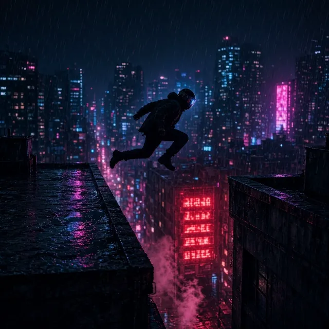
[Verse 1] Rain on the tar paper, heartbeat in the dark Six floors of neon, red sign sparking I took the gap between the towers Gravity blinked — I didn't [Chorus] I made it out, but the city wants me back Chrome and rain, a heartbeat on the track You can chase the skyline, I'm already gone The night keeps my shadow, the dawn keeps me gone [Verse 2] A visor caught the billboard, ghost light on my face The whole block screaming, still I set the pace One more leap, no looking down The sky's a ceiling in this town [Chorus] I made it out, but the city wants me back Chrome and rain, a heartbeat on the track You can chase the skyline, I'm already gone The night keeps my shadow, the dawn keeps me gone [Outro] Red sign flickering, six floors down I'm a rumor in the rain now Catch me if the city can I'm gone before the morning can
Input brief and source images
Song brief (theme, not lyrics)
Write a short original closing-credits song for a night-city chase game. Rooftop getaway: rain on black tar paper, a last leap between two towers, a red neon hotel sign flickering six floors down, one visor catching a billboard. Theme: you made it out, and the city still wants you. Cool, cinematic, electric — not cozy. No brand names, no real artist names.
Style (instruments & tempo)
Cinematic synthwave, mid-tempo night-drive pulse, dry confident vocal, analog bass, gated snare, rain and neon shimmer. Clear words and a memorable chorus; no artist imitation.
Open workflow ↗Steal thisDownload workflowOriginal sampled graphExplore MCP tools ↗
Night-ride SFX
Cover is reused Volt alley card art from examples/gallery/combine-images/preview.webp (wet neon alley), pending a true ElevenLabs Sound Effects V2 QC sting — no paid elevenlabs/sound-effects/v2 or NanoGPT run this PR. Job is a ~4s Volt night-ride radio sting: wet neon alley pulse, radio static bloom, one electric-cyan thunder hit, tight decay. Distinct from Closing-credits song (sing / Mureka generate-song) and TTS / voice. Not a video Keep. Open the graph — SFX brief is the Volt sting sentence; Sting pins elevenlabs/sound-effects/v2 at duration 4 (~$0.008). No music bed, vocals, or dialogue. No upload. No LLM.
{kind=link}
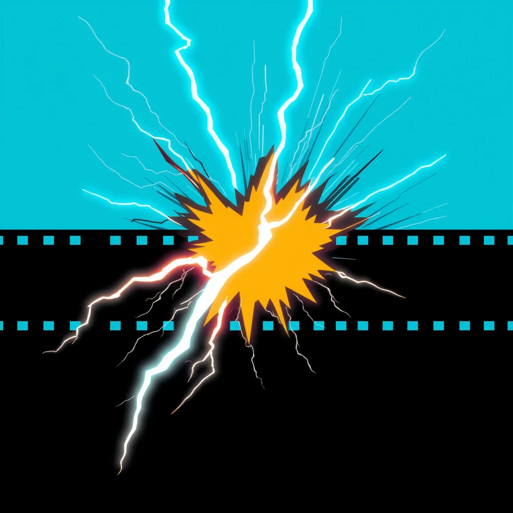
Cover is reused Volt alley card art from examples/gallery/combine-images/preview.webp (wet neon alley), pending a true ElevenLabs Sound Effects V2 QC sting — no paid elevenlabs/sound-effects/v2 or NanoGPT run this PR. Job is a ~4s Volt night-ride radio sting: wet neon alley pulse, radio static bloom, one electric-cyan thunder hit, tight decay. Distinct from Closing-credits song (sing / Mureka generate-song) and TTS / voice. Not a video Keep. Open the graph — SFX brief is the Volt sting sentence; Sting pins elevenlabs/sound-effects/v2 at duration 4 (~$0.008). No music bed, vocals, or dialogue. No upload. No LLM.
Input brief and source images
SFX brief
Volt night-ride radio sting: short wet neon alley pulse — low radio static bloom into one electric-cyan thunder hit, then tight decay. Pocket-radio energy, ~4s, no music bed, no vocals, no dialogue.
Open workflow ↗Steal thisDownload workflowOriginal sampled graphExplore MCP tools ↗
Night-ride radio VO
Cover is reused Volt courier card art from examples/gallery/talking-avatar/preview.webp (night dispatcher), pending a true SpaceXAI TTS QC take — no paid xai-tts or NanoGPT run this PR. Job is speech only: Spoken script → Speech (`xai-tts`, voice Leo). First-click is a Volt night-board dispatch callout. Distinct from Spoken introduction (talking-avatar / Muse + MiniMax Speech + LongCat), Night-ride radio take (infinitetalk-radio-take), Night-ride SFX (elevenlabs/sound-effects/v2), and Closing-credits song (sing / Mureka). No image, no video, no LLM, no upload. Open the graph — Spoken script is the Volt callout; Speech pins xai-tts at voice Leo (~$0.0023 / well under $0.01). Custom-endpoint stays retired.
{kind=link}
Cover is reused Volt courier card art from examples/gallery/talking-avatar/preview.webp (night dispatcher), pending a true SpaceXAI TTS QC take — no paid xai-tts or NanoGPT run this PR. Job is speech only: Spoken script → Speech (`xai-tts`, voice Leo). First-click is a Volt night-board dispatch callout. Distinct from Spoken introduction (talking-avatar / Muse + MiniMax Speech + LongCat), Night-ride radio take (infinitetalk-radio-take), Night-ride SFX (elevenlabs/sound-effects/v2), and Closing-credits song (sing / Mureka). No image, no video, no LLM, no upload. Open the graph — Spoken script is the Volt callout; Speech pins xai-tts at voice Leo (~$0.0023 / well under $0.01). Custom-endpoint stays retired.
Input brief and source images
Spoken script
Volt is live on the night board. Grab your pocket radio, take the ridge handoff, and I'll keep the cyan channel clear until you're docked.
Open workflow ↗Steal thisDownload workflowOriginal sampled graphExplore MCP tools ↗
Night-courier spoken intro
Cover still is the Volt night-courier dispatcher — card art for the new first-click. The saved Avatar___lipsync.mp4 is the earlier 5 September workshop / museum-guide sample (navy shirt, workshop welcome); it does not match this first-click until a later regen. Sampled frames of that older take retain a coherent mouth and head movement. Gemini 3.8 Flash transcribed the intended workshop script and reported clear, calm male speech ($0.00164, model-assisted). Open workflow uses the current model ID after a provider-name migration; the original sampled graph is retained below.
Input brief and source images
Presenter look
A fictional night-courier dispatcher in his late 20s, East Asian appearance, neat black undercut, sharp jaw, calm almost-smile, unobstructed face and mouth. Shoulders-up, front-facing portrait. Matte charcoal courier jacket with one sharp electric-cyan lightning-bolt chevron on the collar (no letters). Hard cyan rim light from camera-right, magenta bounce, charcoal void. One person only. No helmet, helmet-under-arm pose, logos, extra people or readable text.
Spoken script
Volt is live on the night board. Grab your pocket radio, take the ridge handoff, and I'll keep the cyan channel clear until you're docked.
Delivery
Natural calm delivery, subtle blinks and small head movements. Keep the face and mouth visible, eyes toward the camera, body position stable. Locked camera, no cuts or extra people.
Open workflow ↗Steal thisDownload workflowOriginal sampled graphExplore MCP tools ↗
Night-ride radio take
Cover still is card art for the Night-ride radio take first-click — mid-shot Volt courier holding a pocket radio on a rain-slick rooftop ledge. Sample InfiniteTalk video QC pending — no paid infinitetalk / NanoGPT run this PR. Job is still + audio → InfiniteTalk speaking/singing video (lips + body), not the talking-avatar graph (Muse → MiniMax Speech → LongCat). Open the graph from Examples — Muse paints the still; keep the Speech bootstrap or swap in a take under ~15 s; Avatar / lipsync stays on infinitetalk at people=single / 480p. Inspect body motion and lip timing. This model follows the sound; it does not invent a TTS script.
{kind=link}
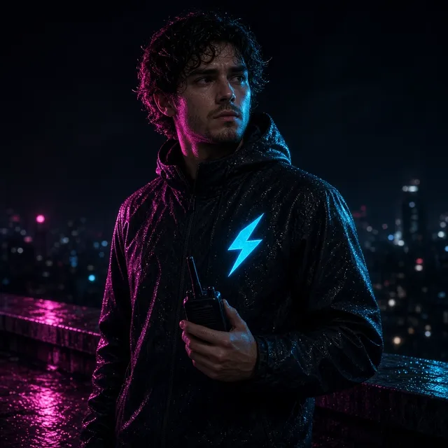
Cover still is card art for the Night-ride radio take first-click — mid-shot Volt courier holding a pocket radio on a rain-slick rooftop ledge. Sample InfiniteTalk video QC pending — no paid infinitetalk / NanoGPT run this PR. Job is still + audio → InfiniteTalk speaking/singing video (lips + body), not the talking-avatar graph (Muse → MiniMax Speech → LongCat). Open the graph from Examples — Muse paints the still; keep the Speech bootstrap or swap in a take under ~15 s; Avatar / lipsync stays on infinitetalk at people=single / 480p. Inspect body motion and lip timing. This model follows the sound; it does not invent a TTS script.
Input brief and source images
Still brief
Mid-shot of a fictional night courier, late 20s, matte charcoal jacket with one electric-cyan lightning-chevron, pocket Volt radio held chest-high in one hand, unobstructed face and mouth, rain-slick rooftop ledge, magenta rim plus cyan bounce, charcoal void. Locked camera. One person. No helmet, glasses, logos, letters, or second person.
Radio take (bootstrap)
Volt-07 on the ridge. Cyan channel clear. Last drop, then dock.
Delivery
Natural radio-check body language — small head turns, radio hand steady, lips and torso follow the take. Locked camera, one person, no cuts.
Open workflow ↗Steal thisDownload workflowOriginal sampled graphExplore MCP tools ↗